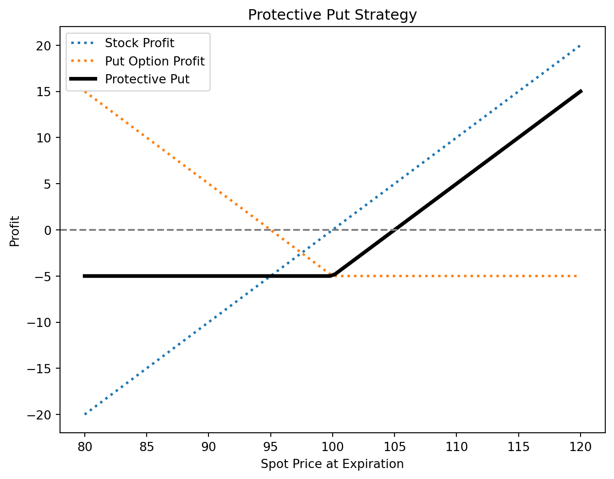
6 Options Trading Strategies and Hedging
References
- HULL, John. Options, futures, and other derivatives. Ninth edition. Harlow: Pearson, 2018. ISBN 978-1-292-21289-0.
- Chapter 12 - Trading Strategies Involving Options
- PIRIE, Wendy L. Derivatives. Hoboken: Wiley, 2017. CFA institute investment series. ISBN 978-1-119-38181-5.
- Chapter 5 - Derivatives Strategies
Additonal sources on option trading strategies:
Learning Outcomes:
- Understand the structure and purpose of Principal Protected Notes, including how they safeguard the principal amount while offering potential investment gains.
- Analyze strategies that combine positions in the underlying asset with options to manage risk and enhance potential returns, focusing on protective puts and covered calls.
- Explore various option spread strategies, such as bull spreads, bear spreads, calendar spreads, and butterfly spreads, to understand their risk/reward profiles and market outlook implications.
- Examine option combination strategies like straddles, strangles, strips, and straps, highlighting their use in volatile markets to capitalize on significant price movements in either direction.
6.1 Principal Protected Note
Principal Protected Note (PPN) allow investors to participate in high-reward opportunities while safeguarding their principal. This is achieved through a combination of a zero-coupon bond and a derivative, typically a call option.
Example: PPN Structure
Consider a $1,000 PPN structured as follows:
Zero-Coupon Bond Component: A 3-year zero-coupon bond with a face value of $1,000 ensures principal protection. Assuming a continuously compounded interest rate of 6%, its present value is:
\[ PV = 1,000 \times e^{-0.06 \times 3} = 835.27 \] This confirms that an initial investment of $835.27 will grow to $1,000 in 3 years, ensuring capital protection.Call Option Component: The remaining $164.73 ($1,000 - $835.27) is used to buy a 3-year at-the-money call option on a stock portfolio, providing upside potential.
Key Factors Affecting PPN Feasibility:
- Dividends: High dividend yields reduce the appeal of the call option component.
- Interest Rates: Higher rates lower the cost of the zero-coupon bond, making principal protection cheaper.
- Volatility: Increased volatility raises the option price but enhances upside potential.
PPNs can be tailored to different investor needs through:
- Strike Price Adjustments: Setting options out of the money for higher potential returns.
- Return Caps: Imposing limits on maximum gains to reduce option costs.
- Structural Features: Incorporating knock-outs, averaging mechanisms, and other innovations to refine risk-return profiles.
6.2 Combining Underlying and Options
Integrating stock positions with options allows for customized risk/reward profiles suited to different market views. Two key strategies illustrating this approach are the protective put and covered call.
Protective Put
A protective put involves holding a stock while purchasing a put option on the same stock. This strategy:
- Protects against downside risk by setting a minimum selling price (the put’s strike price).
- Preserves upside potential, as gains are uncapped beyond the strike price.
Covered Call
A covered call involves owning a stock and selling a call option on it. This strategy:
- Generates income from the option premium, boosting returns in flat or slightly bullish markets.
- Limits upside potential to the call’s strike price but provides partial downside protection through premium income.
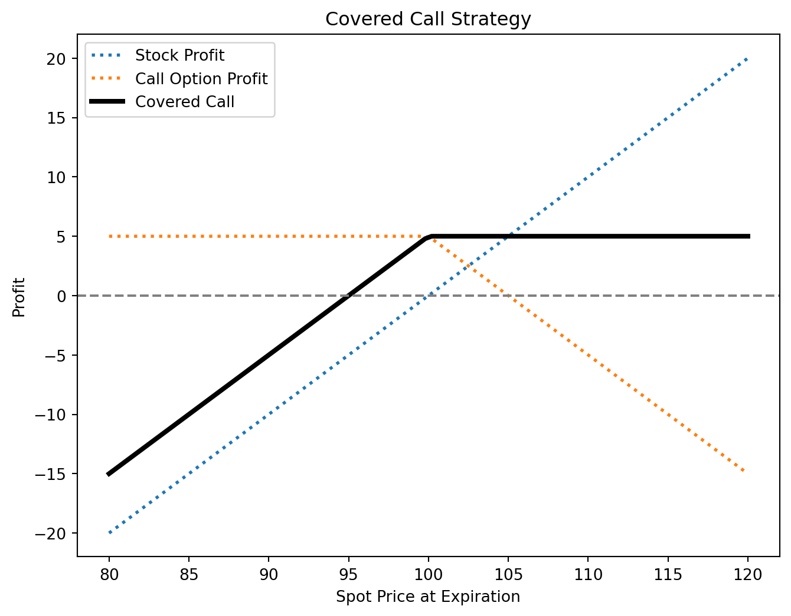
6.3 Option Spreads
Option spreads involve holding multiple options of the same type to structure risk/reward profiles based on market expectations. These strategies range from bullish to bearish or neutral.
Bull Spread
A bull spread profits from a moderate price increase and can be constructed using calls or puts.
Call Bull Spread
- Position: Buy a call at a lower strike price, sell a call at a higher strike price (same expiration).
- Profit: Limited to the difference between strike prices minus the net premium paid.
- Risk: Limited to the net premium paid.
- Break-even: Lower strike price + net premium paid.
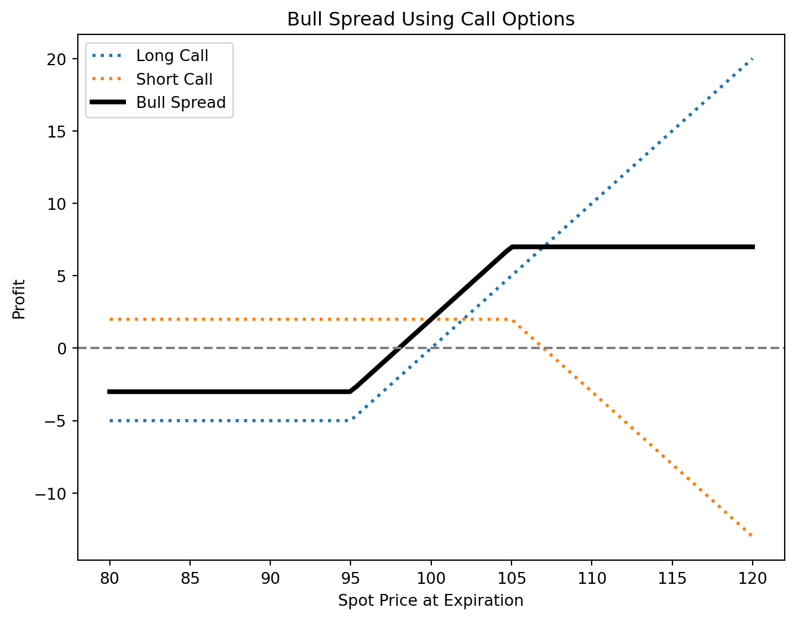
Put Bull Spread
- Position: Buy a put at a higher strike price, sell a put at a lower strike price (same expiration).
- Profit: Limited to the difference between strike prices minus the net premium paid.
- Risk: Limited to the net premium paid.
- Break-even: Higher strike price - net premium paid.
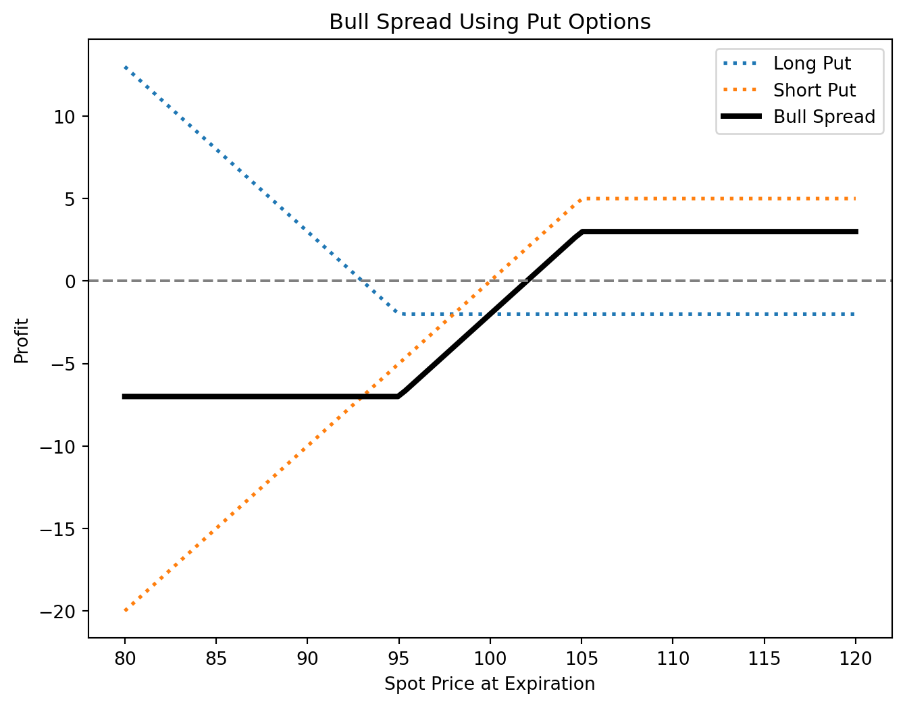
Bear Spread
A bear spread profits from a moderate price decline and can also be constructed using calls or puts.
Call Bear Spread
- Position: Buy a call at a higher strike price, sell a call at a lower strike price (same expiration).
- Profit: Limited to the net premium received.
- Risk: Limited to the difference between strike prices minus the net premium received.
- Break-even: Lower strike price + net premium received.
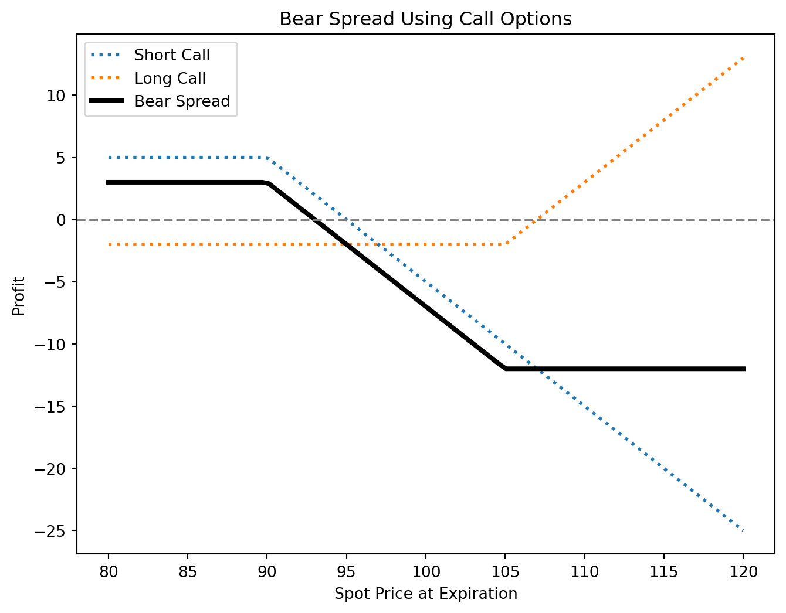
Put Bear Spread
- Position: Buy a put at a higher strike price, sell a put at a lower strike price (same expiration).
- Profit: Limited to the net premium received.
- Risk: Limited to the difference between strike prices minus the net premium received.
- Break-even: Higher strike price - net premium received.
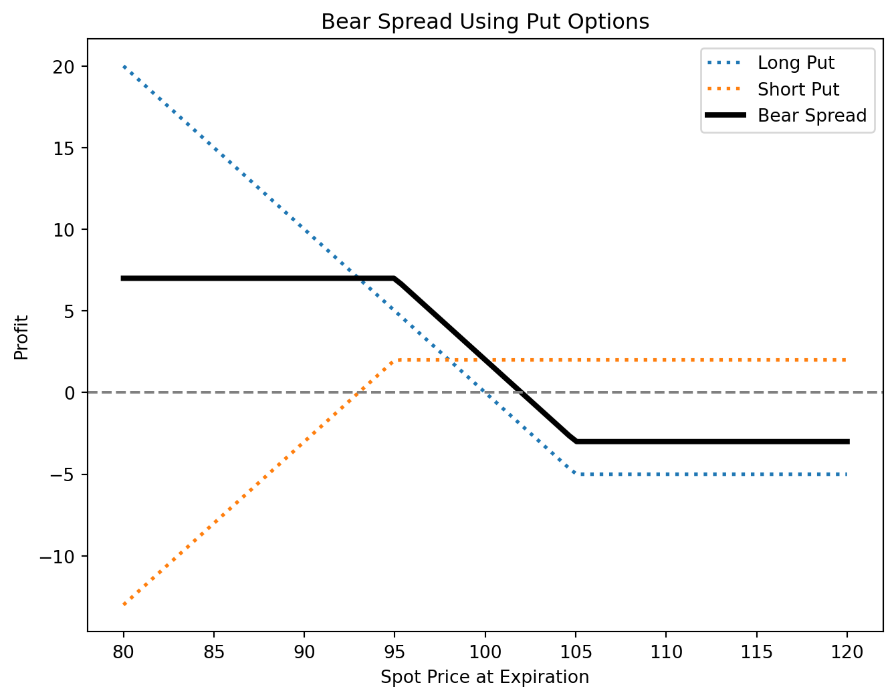
Butterfly Spread
A butterfly spread is a neutral strategy used when minimal price movement is expected. It involves three strike prices and can be structured with calls or puts.
Call Butterfly Spread
- Position:
- Buy 1 call at a lower strike price (A).
- Sell 2 calls at a middle strike price (B).
- Buy 1 call at a higher strike price (C).
- All options share the same expiration and have equidistant strike prices.
- Buy 1 call at a lower strike price (A).
- Profit: Maximum when the underlying price equals the middle strike price at expiration.
- Risk: Limited to the net premium paid.
- Break-even points:
- Lower: \(A + \text{net premium paid}\)
- Upper: \(C - \text{net premium paid}\)
- Lower: \(A + \text{net premium paid}\)
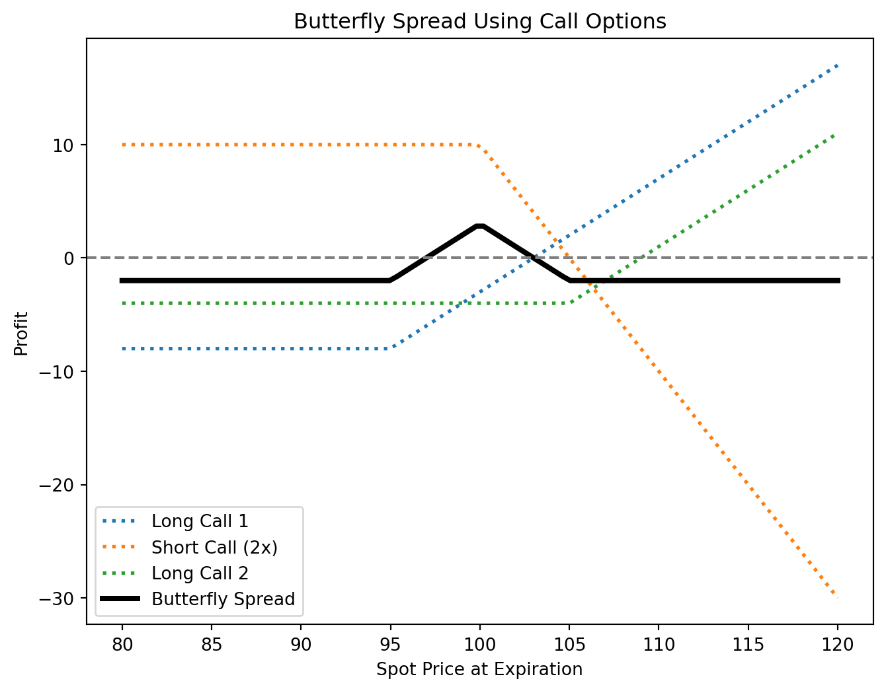
Put Butterfly Spread
- Position:
- Buy 1 put at a higher strike price (A).
- Sell 2 puts at a middle strike price (B).
- Buy 1 put at a lower strike price (C).
- Same expiration and equidistant strikes.
- Buy 1 put at a higher strike price (A).
- Profit/Risk: Similar to the call butterfly spread.
- Break-even points: Identical to the call butterfly but adjusted for put strike prices.
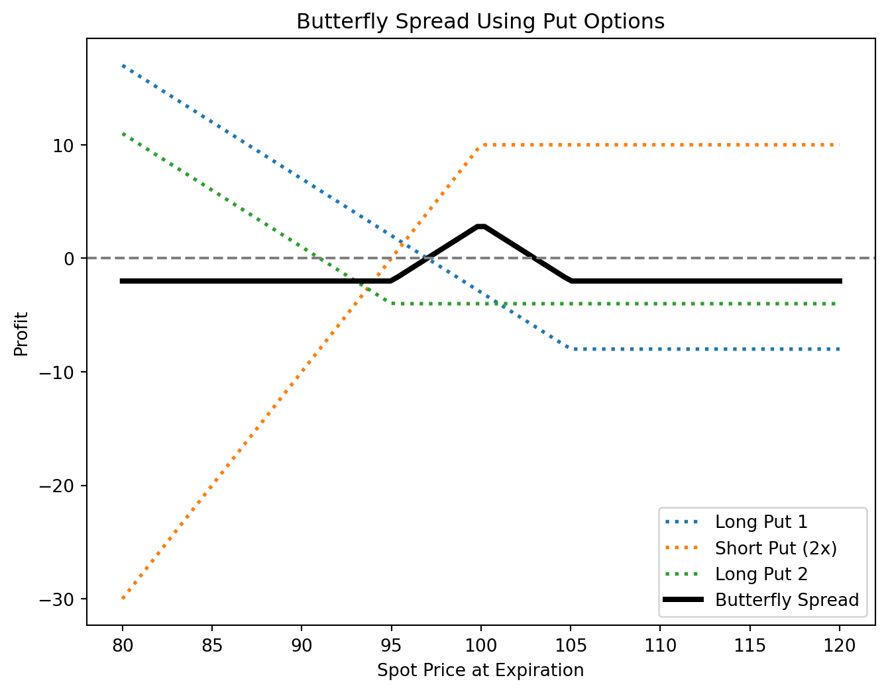
Key Features of Option Spreads
- Market Outlook: Bull spreads suit moderate price increases, bear spreads fit moderate declines, and butterfly spreads work best in stable markets.
- Risk & Reward: Bull and bear spreads offer defined risk and reward, while butterfly spreads provide a high reward-to-risk ratio in low-volatility conditions.
- Cost Efficiency: Spreads are often more cost-effective than outright option positions.
- Flexibility: Investors can adjust spread width and strike prices to tailor risk exposure.
Calendar Spreads
Calendar spreads (also called time or horizontal spreads) involve options with the same underlying and strike price but different expiration dates. They capitalize on differences in time decay (theta). A typical calendar spread consists of selling a short-term option and buying a longer-term option of the same type (call or put).
For more details, see tastylive.
6.4 Option Combinations
Option combinations involve two or more options of different types, allowing traders to express complex market views and hedge risks beyond single-option positions. Key strategies include straddles, strangles, strips, and straps.
Straddles
A straddle consists of buying or selling both a call and a put with the same strike price and expiration.
Long Straddle
- Buy a call and a put at the same strike price.
- Profits from high volatility, regardless of direction.
- Max loss: Total premium paid.
- Max profit: Unlimited if the asset moves significantly.
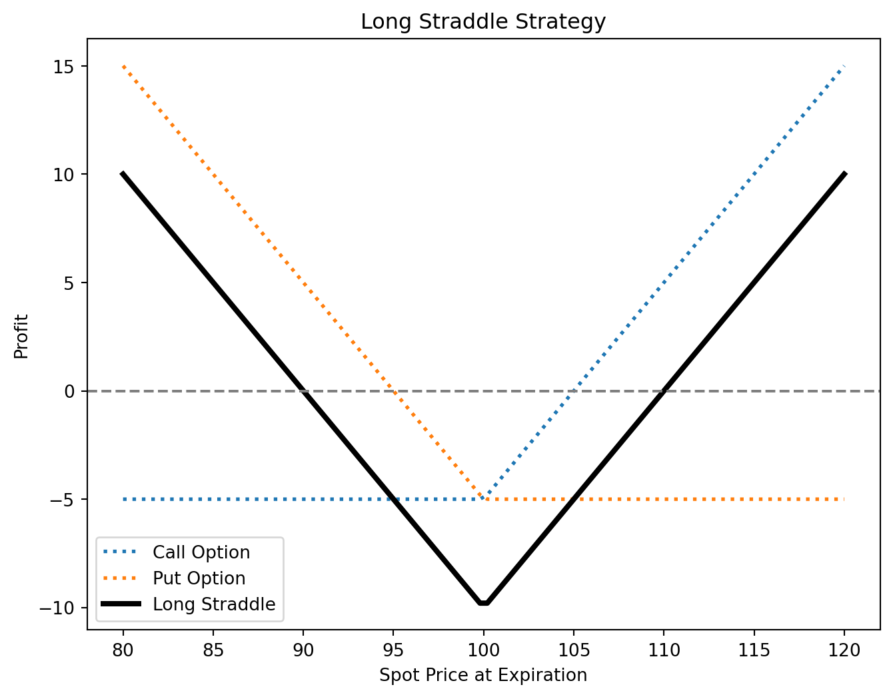
Short Straddle
- Sell a call and a put at the same strike price.
- Profits from low volatility, expecting price stability.
- Max profit: Premiums received.
- Max risk: Unlimited if the asset moves significantly.
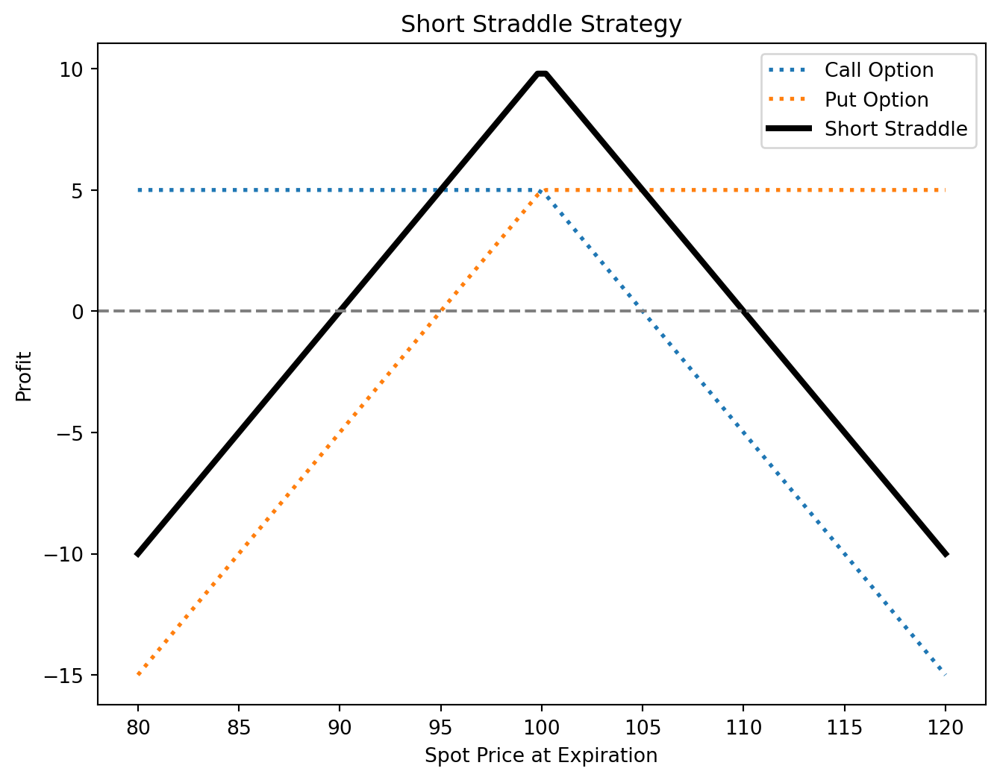
Strangles
A strangle is similar to a straddle but uses different strike prices (call strike > put strike).
Long Strangle
- Buy an OTM call and an OTM put.
- Cheaper than a straddle but requires a larger price move to profit.
- Max loss: Total premium paid.
- Max profit: Unlimited on large price moves.
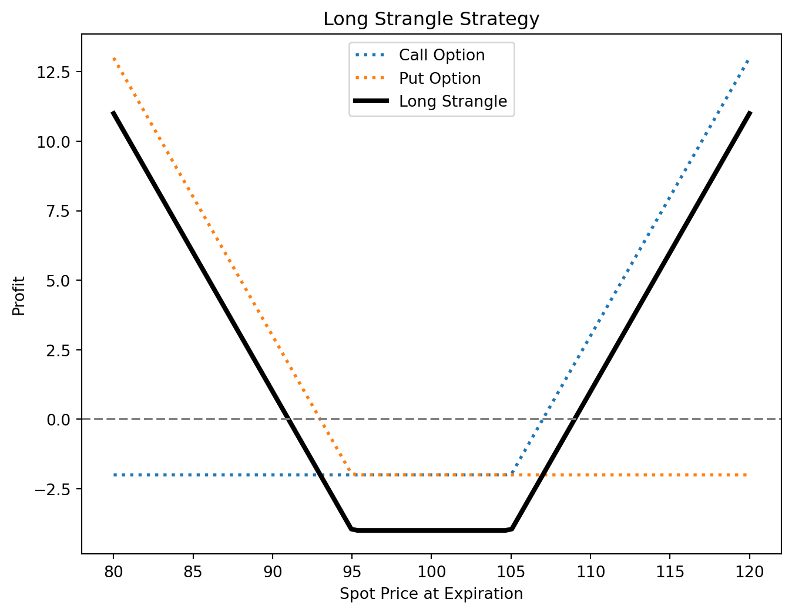
Short Strangle
- Sell an OTM call and an OTM put.
- Profits from low volatility and time decay.
- Max profit: Premiums received.
- Max risk: Large if the asset moves significantly.
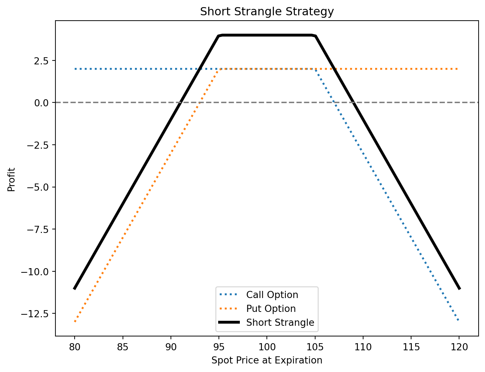
Strips and Straps
These are variations of the straddle, introducing a directional bias while still benefiting from volatility.
- Strip (Bearish bias): Buy 1 call and 2 puts at the same strike price. More profitable if the price drops.
- Strap (Bullish bias): Buy 2 calls and 1 put at the same strike price. More profitable if the price rises.
Key Characteristics
- Volatility Sensitivity: Long positions (straddles, strangles, strips, straps) benefit from increased volatility, while short positions profit from low volatility.
- Directional Bias: Straddles and strangles are neutral, while strips and straps have a directional tilt.
- Risk & Reward:
- Long positions: Limited risk (premium paid), unlimited reward.
- Short positions: Limited profit, significant risk if the price moves sharply.
- Long positions: Limited risk (premium paid), unlimited reward.
- Breakeven Points:
- Each strategy has two breakeven points, requiring significant price movement for profitability in long strategies.
6.5 Practice Questions and Problems
What is meant by a protective put? What position in call options is equivalent to a protective put?
Explain two ways in which a bear spread can be created.
When is it appropriate for an investor to purchase a butterfly spread?
What trading strategy creates a reverse calendar spread?
What is the difference between a strangle and a straddle?
A call option with a strike price of $50 costs $2. A put option with a strike price of $45 costs $3. Explain how a strangle can be created from these two options. What is the pattern of profits from the strangle?
Explain how an aggressive bear spread can be created using put options.
Suppose that put options on a stock with strike prices $30 and $35 cost $4 and $7, respectively. How can the options be used to create (a) a bull spread and (b) a bear spread? Draw and explain profit/loss.
An investor believes that there will be a big jump in a stock price, but is uncertain as to the direction. Identify six different strategies the investor can follow and explain the differences among them.